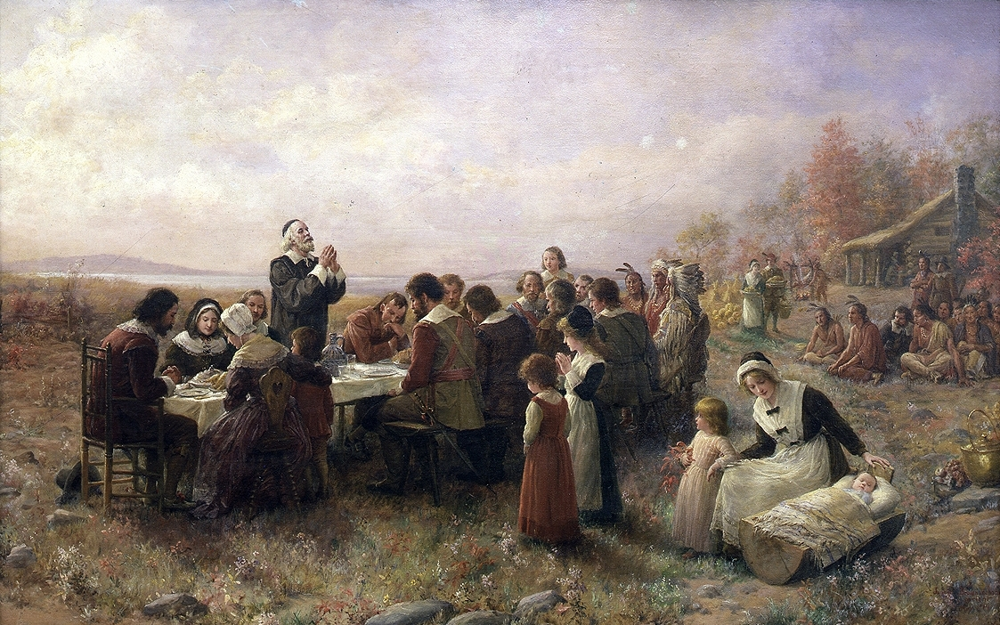

Whose Narrative
Survives?
Every event leaves behind more than one account. Usually only one of them becomes the story: the one in the textbook, the one in the painting, the one everyone repeats.
These two classes ask how that happens. Was the account that won the one with the best evidence?
The deliverable, in both classes: how each account justifies itself and what counts as evidence for it. Never a verdict on which side was right or worse. If the room starts arguing about morality, ask the TOK question instead: how did this account come to count as the accepted one?
Keys: ← → move between screens, R reveals the next hidden block, T shows these notes. Print pack = Winslow sheet, Jerusalem dossier (9 cards) and the group question sheet.
Before we look at anything
- What happened at “the first Thanksgiving”? Write down everything you think you know.
- Where did you learn it? A film, a cartoon, a textbook, a teacher, social media?
Keep this page. You will come back to it.
What would make a story about the past true?
Before we test any story, we need to agree on the test.
- Think of a story about something that happened at your school last year. What would have to be true for that story to be true, and not just a good story?
- Write your test as a short list.
1. The events it describes took place.
2. They took place in the way the story says.
3. They took place for the reasons the story gives.
We will run every story today through this test: the famous one, the forgotten one, and the angry one.
Do not add a fourth part yet. The lesson is built so that students discover what the test misses: a story can pass all three parts and still mislead by what it leaves out. That lands on the exit (screen 11).
The people who were already there
The Wampanoag had lived in what is now southern Massachusetts for thousands of years. They were a group of allied communities, each with its own leader.
In the years just before 1620, an epidemic brought by European sailors killed a large part of the coastal population. One whole village, Patuxet, was emptied. The colonists later built their town, Plymouth, on its site.
One Patuxet man survived because he was not there. Tisquantum (often called Squanto) had been kidnapped by an English captain in 1614 and taken to Europe. He came home speaking English, and found his village gone.
About a hundred English colonists arrived on the Mayflower in November 1620. Roughly half died that first winter.
In March 1621 the colonists made a treaty with Ousamequin, the leader of the Wampanoag. The English called him “Massasoit,” which is a title meaning great leader, not his name. Tisquantum interpreted. They promised not to harm each other and to defend each other against enemies, and agreed that when either side visited the other, they would leave their weapons behind.
Treaty terms: Pilgrim Hall Museum, pilgrimhall.org/?p=1790 · Ousamequin and Tisquantum: World History Encyclopedia, worldhistory.org/Massasoit
- In autumn 1621, which side needed the alliance more? Could it be both?
Population figures for the epidemic vary a lot between sources. Say “a large part” and do not put a percentage on the board.
The picture most people carry

Jennie A. Brownscombe, The First Thanksgiving at Plymouth (1914). Public domain.
- You now know who was there. What does the painting get right?
- The painter was born in 1850. Where could she have got this picture from?
Log cabins. The Plymouth colonists did not build them.
Feathered headdresses of the kind worn on the Great Plains, more than 2,000 km away. Not Wampanoag dress.
The museum that owns a later version says she researched carefully, yet painted “the idealized version of the story that entered the collective memory of the United States in the last quarter of the 19th century.”
National Museum of Women in the Arts: nmwa.org/art/collection/thanksgiving-plymouth
She didn’t paint 1621. She painted the story about 1621. So what did the people who were there actually write?
Q1 matters: some of it is right (colonists and Wampanoag together, food, autumn). Don’t let the room decide the whole thing is invented; screen 5 depends on students seeing that the famous story is mostly built on something real.
Two passages from the same book
In 1622 a short book about the new colony was printed in London. We now call it Mourt’s Relation. It was written by the colonists themselves, mostly by Edward Winslow. Both of these passages are in it.
Exploring the coast, they find a store of corn buried by the people who lived there. They decide to “take the kettle and as much of the corn as we could carry away with us,” and to “satisfy them for their corn” if they ever meet the owners. They also take “a bag of beans.”
They open a mound, see it is a grave, and close it again, because “it would be odious unto them.” Later they dig into another grave. The body has “fine yellow hair.” They write: “We brought sundry of the prettiest things away with us, and covered the corpse up again.”
“Our harvest being gotten in, our governor sent four men on fowling, that we might after a more special manner rejoice together, after we had gathered the fruits of our labors. They four in one day killed as much fowl as, with a little help beside, served the Company almost a week. At which time, amongst other recreations, we exercised our arms, many of the Indians coming amongst us, and among the rest their greatest king Massasoit, with some 90 men, whom for three days we entertained and feasted, and they went out and killed five deer, which they brought to the plantation and bestowed on our governor, and upon the captain and others.”
“We exercised our arms”: the colonists practised with their weapons, a military drill. With muskets, that means firing them. The historian Diana Karter Appelbaum reads it as displays of musket fire put on for the guests.
“Massasoit”: Ousamequin, the Wampanoag leader (screen 3). “Indians” is Winslow’s word.
- Go back to your list from the start. Which parts of the famous story does Passage B support? Be honest: it may be more than you expect.
- Which parts of your list are not in Passage B?
- Both passages are in the same book, written by the same people. One became a national story. Which? Why not the other?
A harvest celebration, lasting three days.
Colonists and about ninety Wampanoag men eating together.
The Wampanoag bringing five deer.
Part 1 of our test: these events took place.
The name “Thanksgiving.” The word is not there.
An invitation to the Wampanoag. Winslow doesn’t say anyone was invited.
Turkey (only “fowl”). A thank-you to the Wampanoag. The idea that this was the first of a yearly tradition.
The famous story isn’t invented. It is one true passage, with things added to it, and another true passage from the same book left out.
Passage A is the colonists’ own account and it is careful to look honourable: they plan to pay for the corn, they leave the first grave alone. Six months later, in June 1621, they did promise the corn’s owners restitution (Plimoth Patuxet, “A Voyage… to the Kingdom of Nauset”). Students should notice the self-presentation; that is source criticism, not excuse-making.
On “exercised our arms”: the meaning (a drill) is clear; that it involved firing is the normal reading for musketeers, and the Wampanoag tradition on screen 7 independently says the guns were heard.
What got added, and who it mattered to
For each step, decide as a class: did it add new evidence about 1621, or did someone name it, publish it or teach it? Then look at who the story mattered to at that moment.
- Look at the “mattered to” notes. Whose story was this, and who was it for?
- Who is missing from that list?
- At which step did Passage A drop out of the story?
Q3 has no single answer, and that is the answer: Passage A was never in. Nobody removed it. It was never selected. That is how a narrative fails to survive without anyone suppressing it; screen 8 shows the other way.
The account that isn’t on the page
The Wampanoag did not keep written records in 1621. Their history was carried by oral tradition, passed down and retold.
Wampanoag tradition says the ninety men came because they heard the colonists’ guns, and came to see what was happening. The visit was diplomacy between allies, not a dinner invitation.
Smithsonian American Indian magazine: americanindianmagazine.org/story/a-closer-look-at-the-thanksgiving-tale
- Is oral tradition evidence? What would make you trust it more, or less?
- Find the words in Passage B that fit the Wampanoag account. Could either account have copied the other?
- Remember the treaty: visitors leave their weapons behind. Ninety men arrive while the colonists are firing muskets. Does that change how you read the meeting?
Two accounts that never read each other, one written and one spoken, agree that the guns came first. That is the independence test from Lesson 2.
So when the story was built in the 1800s, the Wampanoag account was not left out because it was weak evidence. It was left out because the people building the story only counted what was written down, and the people building it were not Wampanoag.
Q3 is interpretation, and should stay open. It does not prove the meeting was tense; it shows that part 3 of the test (the reasons) is where the famous story is weakest, because Winslow gives none.
1970: the speech that was read first
In 1970 Massachusetts celebrated 350 years since the Mayflower landed. The organisers invited Wamsutta Frank James, a Wampanoag leader, to speak. They asked to read his speech in advance.
“The Pilgrims had hardly explored the shores of Cape Cod for four days before they had robbed the graves of my ancestors and stolen their corn and beans.”
“Massasoit, the great Sachem of the Wampanoag, knew these facts, yet he and his People welcomed and befriended the settlers of the Plymouth Plantation.”
“History wants us to believe that the Indian was a savage, illiterate, uncivilized animal. A history that was written by an organized, disciplined people, to expose us as an unorganized and undisciplined entity.”
- Run his first sentence through our test. Is it supported? By what?
- The organisers told him he could not give the speech. What reason do you think they gave?
“The theme of the anniversary celebration is brotherhood and anything inflammatory would have been out of place.”
James gave the speech instead on a hill above Plymouth harbour. Native people have gathered there every Thanksgiving since, calling it the National Day of Mourning.
His most “inflammatory” sentence is supported by the colonists’ own book: Passage A. The account that was refused was not refused for weak evidence. It was refused for not fitting the theme.
Speech text: blogs.cofc.edu (full text, PDF) · The rejection: en.wikipedia.org/wiki/National_Day_of_Mourning_(United_States_protest)
Precision for Q1: “four days” and “robbed the graves” are James’s words. Passage A supports the corn, the beans and the taking of grave goods; it also records the colonists leaving one grave alone and planning to pay for the corn. A strong student will say his claim passes part 1 of the test and that the colonists’ account frames the same events differently (part 2, the manner). That is exactly the move.
Drift guard. Do not let this become “was James right to be angry?” The TOK question: what was the reason for excluding this account, and was it a reason about evidence?
The other perspective, and a claim inside it
For many Native people, Thanksgiving is a day of mourning, not celebration. That is a real perspective, with real evidence behind it. Online you will also meet a stronger claim:
“Thanksgiving really began in 1637, as a celebration of a massacre.”
In May 1637, during a war between the English colonies and the Pequot people (not the Wampanoag), English forces and their Native allies attacked a fortified Pequot village at Mystic, in what is now Connecticut, and killed around 500 men, women and children.
John Winthrop was governor of the Massachusetts Bay Colony, based in Boston: a different and larger colony than Plymouth, founded in 1630. In his journal for 1637 he wrote: “There was a day of thanksgiving kept in all the churches for the victory obtained against the Pequots.”
- Did the events take place?
- In the way the claim says?
- Is this the reason, or the origin, of the holiday we call Thanksgiving?
Part 1 and part 2. The massacre happened, and Winthrop’s colony did hold a day of thanksgiving for the victory.
Part 3. English colonists declared days of thanksgiving all the time, for harvests, rain and victories. Historian David Silverman: “There were hundreds, if not thousands of thanksgivings.” The national holiday comes from 1863 and the steps on screen 6.
Snopes fact-check, with Winthrop’s journal and Silverman: snopes.com/fact-check/thanksgiving-massacre-pequot-tribe
- The mourning perspective does not need the 1637 claim. What evidence does it have that passes all three parts of our test? Look back at screens 5 and 8.
A perspective is only as strong as the evidence you build it on. Build it on the claim that fails, and you hand the argument to the other side.
The anti-relativist turn: exposing one story as incomplete does not make the opposite story true. Both go through the same test. A student who leaves thinking “the official story is propaganda, so the counter-story is the truth” has learned the opposite of the lesson.
Run the grid: “the First Thanksgiving”
Answer each question as a class before you click the cell.
| Question | For the First Thanksgiving |
|---|---|
| E · What counts as evidence?What traces does this story rest on? | The colonists’ book (both passages), Bradford’s history written years later, and Wampanoag oral tradition. In the 1800s, only the written sources were counted, and only one passage from the book was used. |
| V · How is it checked?Do independent traces agree? | Winslow and the oral tradition agree on the guns and the armed visit. The colonists’ own book supports James’s claim about the corn and graves. Nothing at all supports the name “First Thanksgiving”; that was added in 1841. |
| C · Who decides?Who made this the accepted account, and who was it for? | An editor’s footnote, a president, a magazine, school textbooks, a painter, and in 1970 a celebration committee. None had new evidence. Each step served people in their own time, and none of them were Wampanoag. |
| R · What can it never reach?Not yet, or never? | Never: why Ousamequin came, and what he meant by it; what the Wampanoag thought the meeting was, in their own words from 1621; what was said over three days; whether anyone was invited. Not yet: physical traces of the first settlement. Archaeologists found the first remains of 1620s Plymouth in 2016, and more may turn up, but no dig will recover what anyone intended. |
2016 settlement find: Archaeology magazine, archaeology.org/news/2016/11/23/161123-plymouth-pilgrim-settlement
Before you leave
- Which step did the most to make “the First Thanksgiving” the accepted story? Was that step about evidence, or about power?
- Passage B passes part 1 of our test. So does Passage A. Only one became a national story. What does our three-part test miss?
- Go back to the list you wrote at the start. Cross out anything that came from the story rather than the evidence. What is left?
Next class: an event you probably do have a story about.
Do not preview Jerusalem.
What do you already know about the Crusades?
- What do you know about the Crusades? Who fought whom, and why?
- In the story you know, who are the heroes and who are the villains?
- Where did you learn it? School, family, a film, a game, social media?
- Have you heard what happened when the Crusaders took Jerusalem in 1099? If you have heard a number of people killed, write it down.
Most of you already have a story about the Crusades. Today is about where stories like that come from.
In June 1099 an army from western Europe, on what we now call the First Crusade, laid siege to Jerusalem. On 15 July 1099 they broke into the city. Many of the people inside were killed.
What is disputed is how many, and what the accounts of it were doing.
Some students will have a number, often 70,000. Some will know Maalouf, a documentary or a game. All of it goes on the board.
Say this early, and mean it: nothing in this lesson questions that a massacre happened. The independent evidence confirms it. The question is what a historian can know about its size, and why the numbers in the sources differ so much.
The dossier: nine accounts
Many medieval writers, Christian and Muslim, believed that history showed God’s will. They often described events in the words of their holy books, and their readers recognised the reference. (Today people do something similar when they call a disaster “apocalyptic.”)
For example, Christian readers in 1100 knew this line from the Book of Revelation, about the end of the world: “…and blood came out of the winepress, even unto the horse bridles…” (Revelation 14:20).
Medieval writers also often used big round numbers to mean “a huge number,” not an exact count.
The “Before you read” box is frontloading for Q4 and Q5. It gives students the idea that a description can carry a meaning rather than a measurement. It does not tell them which accounts are doing that; working that out is their job.
Watch for students grouping by side and stopping there (“the Christians exaggerate, the Muslims exaggerate”). Push them to group by when and whether the writer was there.
Group task · 20 minutes
- Put the nine cards in order of when they were written. Next to each, write the number it gives (or “no number”). What happens to the number as you move further from 1099?
- Which writers were actually in Jerusalem in July 1099? What did they say?
- One card was written by people who were on neither army’s side. Which one? What does it confirm, and what does it not tell us?
- Raymond (card B) says the blood reached the horses’ bridles. Look at the verse in the “Before you read” box. Is he measuring the blood? If not, what is he telling his readers?
- The detail on card A says later writers copied Ibn al-Athir’s history. Was his number the earliest one? Was he there? Why might the version that got copied not be the earliest one?
- Is any number in the dossier well supported? What evidence would a historian need to settle the number? Is that evidence “not yet” or “never”?
- Finish this as a group, in your own words: what can a historian say they know about July 1099, and what can’t they?
Q5 is where the charge is. Let it be uncomfortable; don’t rescue. If a group says “so the Muslim sources lied,” redirect: did the number’s job change between 1100 and 1233? What job is a number like 70,000 doing? The next screen gives a historian’s answer, and a medieval Arab historian’s.
Q6 has a deliberate answer: no. No number in the dossier is well supported. The eyewitnesses give images, not counts; Fulcher’s 10,000 comes from someone who was not there; the independent letter gives no total; the big numbers come much later. Groups that hunt for “the right number” have missed the point. The evidence that would settle it (a count made at the time) was never made, so this is a “never” wall.
The numbers, in the order they were written
He read the Arabic accounts in order. The early ones, from Syria, Egypt and Iraq, “rarely agreed on what happened in the hours and days after the fall of Jerusalem.” About a century later, one version took over: full-scale massacre, told as part of a long war between Franks and Muslims. That became the version that was copied.
The figure 70,000 was not a count. Seventy thousand is a number with a long history in Islamic writing about martyrdom and the end of days. Hirschler points to a medieval Arab historian who said the same thing six hundred years ago:
“Numbers are not all to be taken literally; the intended sense is rather that of magnitude.”
Raymond was not measuring the blood either. His “bridle reins” are the words of Revelation 14:20, the verse in the “Before you read” box. He was telling his readers that what the crusaders had done fulfilled scripture: “a just and splendid judgment of God.”
Hirschler, “The Jerusalem Conquest of 492/1099 in the Medieval Arabic Historiography of the Crusades,” Crusades 13 (2014): soas-repository.worktribe.com/OutputFile/347926
Modern historians still disagree about the total. One recent historian (Conor Kostick) thinks up to 40,000 is possible, because refugees had crowded into the city; others go far lower. What they agree on is that the later figures are not literal counts. If asked “so how many?”, the honest answer is the lesson: we know there was a massacre; we cannot know the number.
So what do we know?
The city fell on 15 July 1099 and many inhabitants were killed: Muslims, and Jews in the burning synagogue.
Captives were taken and ransomed.
Why we can say this: crusader eyewitnesses, Muslim historians and the Jewish letter, three lines that did not copy each other, all agree.
How many died.
Why not: the people who were there gave no count, and the one fully independent source (card C) gives no count. Every number comes from someone who was not there, most of them writing much later, often with a reason to make it big.
- Somebody says: “Both sides exaggerated, so we can’t know anything about 1099.” What is wrong with that?
- Rank two cards: card C, the letter from the Jewish elders of Ascalon (written about 1100, by people ransoming the survivors), and card F, Ibn Taghribirdi’s history (written in Cairo, more than 350 years later). Which is stronger evidence about 1099, and why? Is your reason about which side wrote it?
Through-line from L4: the summary overreaches. Eight defendants became “the lower classes”, one lifeboat became “any one”, and here an event becomes a number that nobody counted.
Who named it?
None of the nine writers in your dossier called this event part of “the Crusades.” The Muslim historians called the invaders al-Franj, the Franks.
- If the name for an event came from one side’s history books, whose story are you inside when you use it?
- Maalouf calls his book a “true-life novel.” What does that tell you about what he counts as evidence, and what he is trying to do?
- Look at where you said you learned about 1099 at the start of class. Whose story was that?
Contested, for your reference only: some historians (e.g. Edward Peters) argue that Muslim writers largely stopped writing about the Crusades until the 19th century. Others point to Ibn Khaldun and to a 17th-century Jerusalem poet who called his son “a second Saladin” and call the “forgetting” thesis unproven (OUPblog, 2018). The naming dates on screen are not in dispute; how much was remembered is. If a student pushes, that disagreement is itself the C cell: historians disagree about the history of memory.
Run the grid across both cases
Groups: answer the Jerusalem column in your notebooks first. Then check.
| Question | The First Thanksgiving | Jerusalem, 1099 |
|---|---|---|
| E · What counts as evidence? | One written eyewitness paragraph, and an oral tradition that was not counted. | Eyewitness chronicles, a letter from people who ransomed the survivors, and Arabic histories written from decades to centuries later. |
| V · How is it checked? | Independent agreement on the guns; no support at all for the name. | Three independent lines agree that there was a massacre. Nothing independent supports any total. |
| C · Who decides? | Editors, a president, a magazine, textbooks, a painter, a committee. | The chroniclers who were copied. Ibn al-Athir’s version became the standard one; the name “Crusades” came from 19th-century European histories, then was translated. |
| R · What can it never reach? | The Wampanoag view, in their own words, from 1621. | The number. Nobody who was there counted, and no new evidence will produce a count. |
C · Who counts as an expert? The archive and the discipline: what got kept, what got named, what got copied and taught, and who decided. The account that survives is not always the earliest or the best-supported. Often it is the one that had a job to do.
When one account of the past becomes the accepted one, is that because it was the best supported, or because of who got to write it down, name it and teach it?
- Choose the First Thanksgiving or Jerusalem 1099. Name the account that became the accepted one.
- Was it the best-supported account? What, besides evidence, helped it survive?
- Say one thing a historian can know about the event and one thing they can’t, and explain why.
- Use at least two of these concepts by name: evidence, power, perspective, certainty, interpretation.
Watch for the two ditches in the exit writes: “history is written by the winners, so it’s all propaganda” (relativism), and “the official story was a lie, so the other story is true” (the 1637 error).